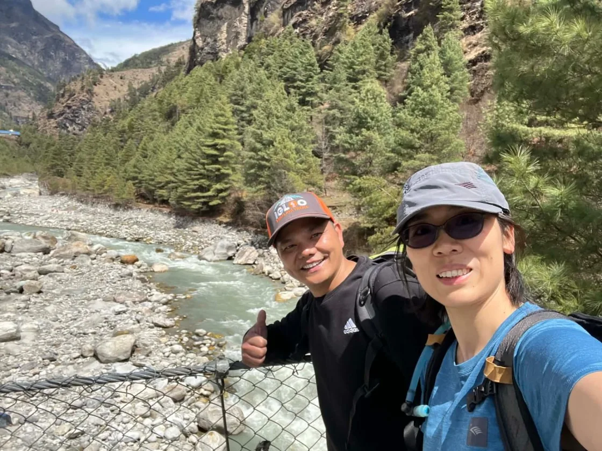
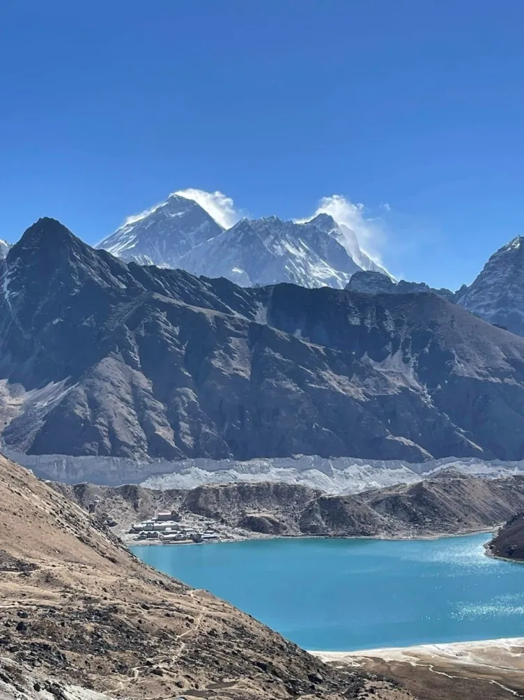
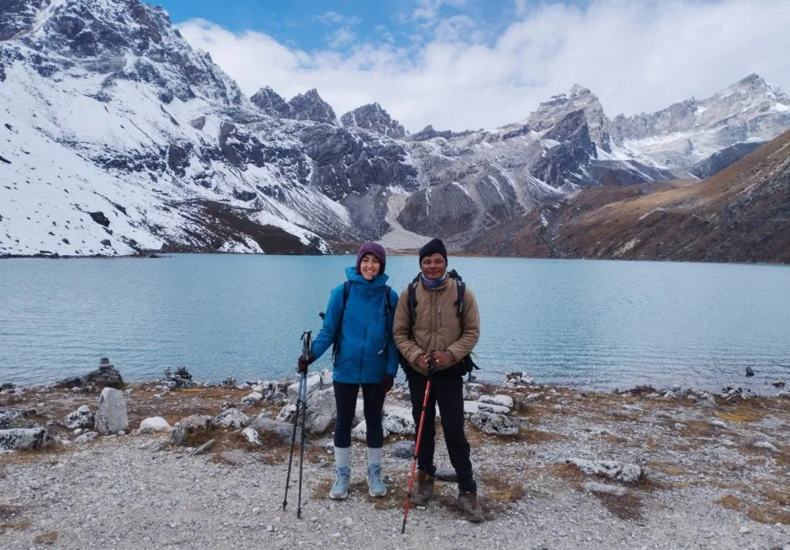
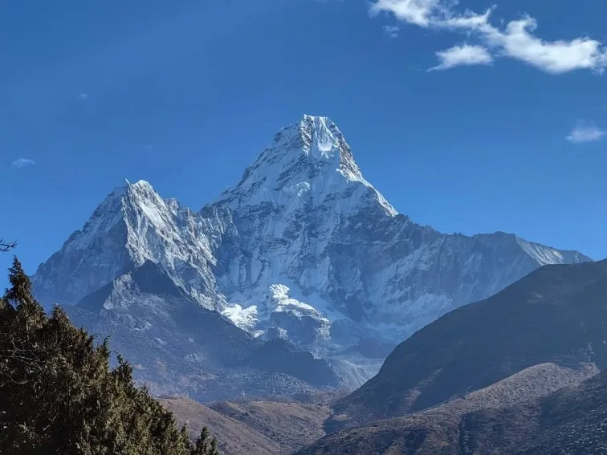
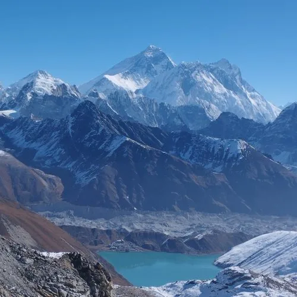
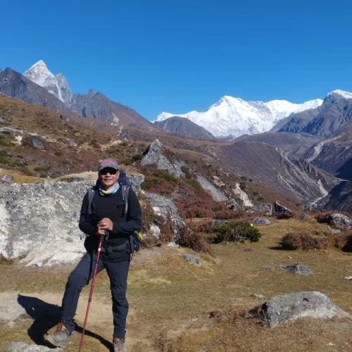
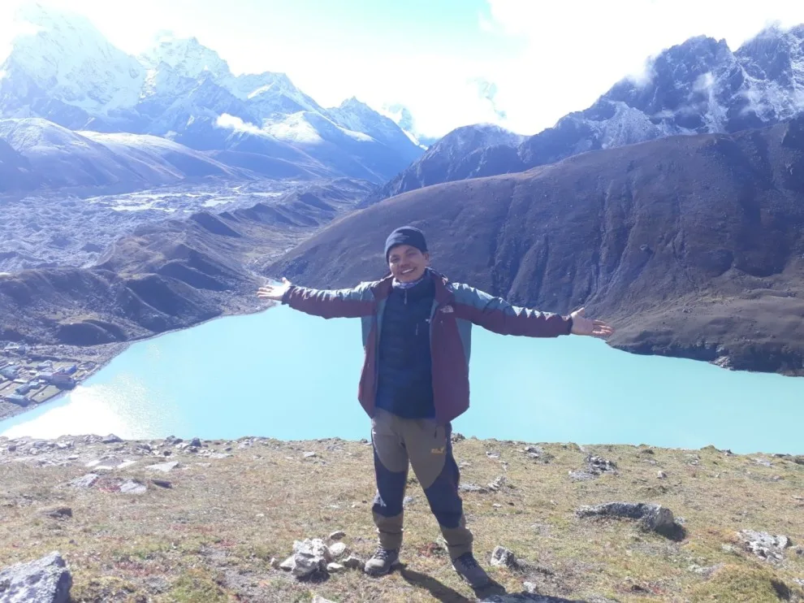

1. 2027 Gokyo Lakes Trek Cost Summary: Budget vs Standard vs Luxury Packages
Planning a trek into the Gokyo Valley requires navigating several distinct pricing tiers. The remote nature of the upper valley—where all food, building supplies, and heating fuel must be transported by yaks, mules, porters, or cargo helicopters—creates a direct correlation between altitude and retail expense.
In 2027, trekking costs fall into three distinct operational categories:
- Budget / Semi-Independent ($950 – $1,300 USD): You organize your own logistics, stay in basic communal teahouses, carry some of your own gear or share a porter, and purchase meals a la carte along the trail.
- All-Inclusive Standard Guided ($1,350 – $1,850 USD): The gold-standard option recommended for most international trekkers. Includes round-trip Kathmandu/Ramechhap–Lukla flights, all national park permits, licensed government-certified Sherpa guide, dedicated porter (1 porter per 2 trekkers), three substantial daily meals with hot tea, and private twin teahouse rooms throughout the 11 to 13 days.
- Premium High-Altitude Luxury ($3,500 – $5,800 USD): Utilizes luxury wilderness lodges in Phakding and Namche (e.g., Yeti Mountain Home or Hotel Everest View), private en-suite rooms with heated beds where available, premium single room supplements, specialized menu options, and chartered helicopter flights directly back from Gokyo to Kathmandu.
| Expense Category | Budget / DIY (USD) | Standard Guided (USD) | Luxury Package (USD) |
|---|---|---|---|
| Lukla Flights (Roundtrip) | $390 – $440 | Included ($410 value) | Helicopter Included ($1,800+) |
| Mandatory Permits (Park & Local) | $55 | Included ($55 value) | Included |
| Guide & Porter Services (12 days) | $250 – $400 (shared) | Included ($550 value) | Private Senior Guide & Porters |
| Teahouse Accommodation (11 nights) | $80 – $140 | Included | $1,200 – $2,400 (Luxury Lodges) |
| Food & Hot Drinks (3 meals/day) | $350 – $450 | Included ($400 value) | Gourmet A La Carte Included |
| Trail Incidentals (Hot showers, charging, Wi-Fi) | $70 – $110 | $70 – $110 | Complimentary / Included |
| Kathmandu Hotel & Transfers | $60 – $120 | $150 – $250 (3-Star Boutique) | $500 – $1,000 (5-Star Luxury) |
| Emergency Evacuation Insurance | $150 – $220 | $150 – $220 | $200 – $300 |
| Total Estimated Investment: | $1,505 – $2,035 | $1,450 – $1,950 (All-in) | $4,200 – $6,200+ |

2. Mandatory Permits, Entry Fees & Local Government Charges for 2027
To enter the Gokyo Valley, every international visitor must obtain two mandatory government permits. Unlike restricted areas like Upper Mustang or Manaslu, the Gokyo Lakes route does not require a special Restricted Area Permit (RAP), keeping official administrative fees exceptionally reasonable.
| Permit Name | Issuing Authority | Cost (NPR) | Cost (USD approx.) | Where to Obtain |
|---|---|---|---|---|
| Khumbu Pasang Lhamu Rural Municipality Permit | Local Government of Khumbu | NPR 3,000 | ~$23 USD | Lukla Checkpoint / Monjo Gate |
| Sagarmatha National Park Entry Permit | Department of National Parks & Wildlife | NPR 3,000 + 13% VAT (NPR 3,390) | ~$26 USD | NTB Kathmandu or Monjo Gate |
| TIMS Card (Trekkers' Information Management) | TAAN / NTB | Exempt in Khumbu Region | $0 USD | Not required in Solukhumbu |
| Total Mandatory Permit Cost: | NPR 6,390 | ~$49 – $52 USD | Checked at Monjo & Namche | |
Following updated Nepal Tourism Board (NTB) security protocols, independent solo trekking without a licensed guide is strictly prohibited in most mountain national parks. While the local Khumbu Pasang Lhamu municipality previously exercised regional autonomy regarding guide mandates, traveling with an insured, certified Sherpa guide is strongly enforced for safety, emergency helicopter dispatch, and medical tracking above 4,000 meters.
3. Kathmandu & Ramechhap to Lukla Flight Costs, Baggage Fees & Helicopter Alternatives
The single largest standalone line item in your trek budget is domestic air transportation to and from Tenzing-Hillary Airport in Lukla (2,846 m). For the 2027 trekking seasons (Spring and Autumn), commercial flight routing is subject to the Civil Aviation Authority of Nepal (CAAN) dual-hub system.

- Direct Kathmandu to Lukla Flight (Fixed-Wing): Approximately $215 – $225 USD one-way ($430 – $450 USD round-trip) per foreigner. Direct flights operate primarily during off-peak months (December, January, June, July, August) from Tribhuvan International Airport (TIA).
- Ramechhap (Manthali) to Lukla Flight (Peak Season): During October, November, April, and May, CAAN reroutes nearly all tourist fixed-wing flights to Ramechhap Airport to relieve Kathmandu runway congestion. Flight tickets cost approximately $180 – $195 USD one-way ($360 – $390 USD round-trip). However, you must factor in shared road transport from Kathmandu to Ramechhap (4.5 to 5 hours, $25 – $35 USD each way in a tourist bus or $140 – $180 USD for a private 4WD Jeep).
- Excess Baggage Fees: Standard airline tickets include exactly 15 kg (33 lbs) of total baggage allowance (10 kg checked duffel + 5 kg carry-on daypack). Excess luggage costs approximately $1.50 – $2.50 USD per kilogram at check-in.
- Helicopter Sharing Alternative: If fixed-wing flights are grounded by cloud ceilings in Lukla, chartered helicopter seats operate on a shared basis for $450 – $600 USD per person one-way directly between Kathmandu and Lukla.
4. Teahouse Accommodation Rates Across Elevation (Phakding to Gokyo Village)
Accommodation in the Gokyo Valley is based on traditional Sherpa family teahouses. Room rates appear deceptively cheap at first glance—often between NPR 500 and NPR 1,200 ($4 to $9 USD) per night for a basic twin-bed room. However, this pricing structure operates under a strict Himalayan hospitality rule:
The Lodging-Meal Covenant: Teahouse operators charge nominal room rates on the express condition that you eat both dinner and breakfast in their dining hall. If a trekker chooses to sleep in a lodge but eat meals elsewhere or cook their own food, lodges will impose a penalty surcharge of NPR 2,500 to NPR 4,000 ($20 to $30 USD) per night.
| Location & Settlement | Altitude | Standard Twin Room (NPR) | Standard Twin Room (USD) | En-suite / Attached Bath |
|---|---|---|---|---|
| Phakding | 2,610 m | NPR 500 – 1,000 | $4 – $8 | Available (+NPR 1,500) |
| Namche Bazaar | 3,440 m | NPR 800 – 1,500 | $6 – $12 | Widely available (+NPR 2,000) |
| Dole | 4,038 m | NPR 1,000 – 1,500 | $8 – $12 | Rare / Shared hall toilets |
| Machhermo | 4,470 m | NPR 1,200 – 1,800 | $9 – $14 | Shared hall toilets only |
| Gokyo Village (3rd Lake) | 4,790 m | NPR 1,500 – 2,200 | $12 – $17 | Shared indoor/squat toilets |

5. High-Altitude Dining: Daily Menu Prices, Dal Bhat, Hot Drinks & Boiled Water
Food will represent the largest daily out-of-pocket expenditure during your trek. At lower elevations like Phakding and Namche, food prices remain moderate. However, as you climb past 4,000 meters into Dole, Machhermo, and Gokyo, prices nearly double because kerosene, LPG cooking gas, fresh vegetables, and rice must be transported up steep mountain gorges.
A typical active trekker requires between $30 and $45 USD per day to cover three nutritious hot meals, afternoon snacks, and hot beverages.
| Menu Item | Price in Namche (3,440 m) | Price in Dole (4,038 m) | Price in Gokyo (4,790 m) |
|---|---|---|---|
| Traditional Dal Bhat (Unlimited refills) | NPR 850 – 1,000 ($7 – $8) | NPR 1,100 – 1,250 ($8.5 – $9.5) | NPR 1,300 – 1,500 ($10 – $11.5) |
| Sherpa Potato Stew (Shyakpa) | NPR 750 ($5.80) | NPR 950 ($7.30) | NPR 1,150 ($8.80) |
| Egg Fried Noodles / Chowmein | NPR 700 ($5.40) | NPR 850 ($6.50) | NPR 1,050 ($8.00) |
| Porridge / Oatmeal with Honey | NPR 550 ($4.20) | NPR 700 ($5.40) | NPR 850 ($6.50) |
| Pot of Ginger Lemon Honey Tea (Medium) | NPR 900 ($7.00) | NPR 1,200 ($9.20) | NPR 1,500 ($11.50) |
| 1 Liter Boiled Drinking Water | NPR 250 ($1.90) | NPR 400 ($3.10) | NPR 500 – 600 ($3.80 – $4.60) |

6. Licensed Sherpa Guide & Porter Daily Wages, Insurance & Tipping Standards
Hiring reputable, locally experienced Sherpa mountain professionals not only ensures your safety and route management across glacial moraines but also directly supports the local Himalayan economy.
Standard 2027 daily wage rates for registered mountain staff in the Everest region are structured as follows:
- Licensed Trekking Guide: $35 – $45 USD per day. Includes guide wages, daily meals, accommodation, equipment allowance, and emergency rescue insurance. Guides speak fluent English, hold wilderness first aid certification, and coordinate all lodge bookings.
- Experienced Porter: $22 – $28 USD per day. Porters carry up to 20 to 22 kg of combined client gear (typically two trekkers’ duffels of 10 to 11 kg each), allowing you to walk comfortably with only a light 5–6 kg daypack.
- Guide-Porter (Porter-Guide): $28 – $35 USD per day. An intermediate option for solo hikers, carrying a lighter duffel (up to 12 kg) while offering navigational assistance.
Tipping is customary and deeply appreciated in Nepal. At the end of the trek in Lukla, standard group tipping guidelines recommend pooling approximately 10% to 15% of the total trek package cost. For an 11-day Gokyo trek, expect to tip roughly $120 – $160 USD total to your guide and $80 – $110 USD total to your porter from a party of two.
8. Gear Rental in Kathmandu: Down Jackets, -20°C Sleeping Bags & Trekking Poles
You do not need to spend thousands of dollars purchasing expedition-grade alpine gear that you might never use again. Kathmandu’s Thamel district offers dozens of trusted gear rental shops where high-quality Himalayan trekking essentials can be rented for a fraction of retail prices.
| Gear Item | Daily Rental Rate (NPR) | Daily Rental (USD) | Deposit Required |
|---|---|---|---|
| -20°C Goose Down Sleeping Bag | NPR 150 – 250 / day | $1.20 – $1.90 / day | NPR 5,000 – 10,000 ($40 – $80) |
| 800-Fill Heavy Down Jacket with Hood | NPR 150 – 250 / day | $1.20 – $1.90 / day | NPR 5,000 – 10,000 ($40 – $80) |
| Pair of Adjustable Trekking Poles | NPR 80 – 120 / day | $0.60 – $0.90 / day | NPR 2,000 ($15) |
| Crampons / Microspikes (for Cho La Pass) | NPR 100 – 150 / day | $0.80 – $1.20 / day | NPR 3,000 ($23) |
| 100L Waterproof Duffel Bag | NPR 100 / day or included | $0.80 / day | NPR 3,000 ($23) |
Renting a down jacket and four-season sleeping bag for a 12-day trek will cost you roughly $35 to $45 USD total, compared to $600 to $1,000 USD to buy them brand new from international outdoor retailers.
9. High-Pass Add-on Costs: Cho La Pass (EBC Link) vs Renjo La Pass Budgeting
Extending your Gokyo Valley trek to include high mountain passes will affect your overall budget. While there are no separate permit fees for crossing passes, additional logistics, extra trekking days, and specialized gear influence your total cost.

- Cho La Pass + Everest Base Camp Extension (Adds 4 to 5 Days):
- Extra Guide & Porter Wages (4 days): +$240 – $300 USD.
- Extra Food & High Lodging (Thagnak, Dzongla, Gorak Shep): +$180 – $240 USD.
- Microspikes rental: +$10 – $15 USD.
- Total estimated extension cost: +$450 – $600 USD per person.
- Renjo La Pass Wilderness Circuit (Adds 2 Days):
- Extra Guide & Porter Wages (2 days): +$120 – $150 USD.
- Extra Food & Lodging in Lungden and Thame: +$70 – $95 USD.
- Total estimated circuit cost: +$200 – $260 USD per person.
10. Mandatory High-Altitude Travel & Helicopter Evacuation Insurance (up to 6,000 m)
Never enter the Gokyo Valley without verifiable travel insurance covering medical emergency rescue and helicopter evacuation up to at least 6,000 meters (20,000 feet). Standard travel policies usually cap coverage at 2,500 m or 3,000 m, specifically excluding high-altitude mountaineering and trekking.

If you suffer from High Altitude Pulmonary Edema (HAPE), High Altitude Cerebral Edema (HACE), or a debilitating fracture above Dole, an emergency helicopter evacuation charter from Gokyo to Kathmandu costs between $3,500 and $5,000 USD out-of-pocket if you lack pre-approved insurance. Specialized policies from providers like World Nomads (Explorer plan), Global Rescue, or Ripcord cost approximately $150 to $250 USD for 3 weeks and provide complete peace of mind.
11. Khumbu Cash Economy: Currency Exchange, Namche ATMs & Card Payment Realities
The Gokyo Valley operates almost exclusively on physical cash in Nepalese Rupees (NPR). Credit and debit card payment terminals are virtually non-existent above Namche Bazaar. Even in Namche, when card processing is offered, merchants impose a mandatory 4% to 8% surcharge, and satellite connections frequently fail during inclement weather.
Namche ATMs: There are several ATMs in Namche Bazaar (including Everest Bank and Himalayan Bank). However, do not rely on them as your primary cash source. They frequently run out of physical bills during peak trekking seasons or shut down due to regional power outages.
Recommended Cash Strategy: Withdraw all estimated spending cash in Kathmandu (NPR 35,000 to NPR 55,000 / $260 to $420 USD per person) before flying to Lukla. Carry small-to-medium denominations (NPR 500 and NPR 1,000 notes) in a waterproof neck pouch or concealed waist belt.
12. Cost Comparison: Standard Gokyo Lakes vs Everest Base Camp vs Three Passes
How does a Gokyo Lakes expedition compare financially to other premier itineraries in the Khumbu region? Here is a direct side-by-side comparison of 2027 standard all-inclusive guided packages:
| Trek Route | Standard Duration | Average Distance | All-Inclusive Cost (USD) | Crowd Factor |
|---|---|---|---|---|
| Classic Everest Base Camp (EBC) | 12 – 14 Days | 130 km | $1,350 – $1,750 | Very High |
| Gokyo Lakes & Gokyo Ri | 11 – 12 Days | 92 km | $1,300 – $1,650 | Moderate / Quiet |
| Gokyo Lakes + Cho La Pass + EBC | 16 – 18 Days | 128 km | $1,750 – $2,300 | Moderate to High |
| Everest Three Passes Trek | 19 – 21 Days | 166 km | $2,100 – $2,750 | Low to Moderate |

13. 7 Proven Tips to Save $300–$600 on Your Gokyo Trek Without Compromising Safety
Smart preparation allows you to significantly reduce unnecessary trail expenses while ensuring you maintain peak health, energy, and comfort:

- Purify Your Own Water: Buying 3 to 4 liters of boiled water daily at high altitude costs $12 to $18 per day ($140+ across the trek). Bring a Katadyn BeFree squeeze filter, SteriPEN UV purifier, or Aquatabs chlorine dioxide tablets to treat tap water for virtually zero cost.
- Carry a High-Capacity Power Bank: Charging devices costs up to $5 per charge in Gokyo. An Anker 20,000 or 26,800 mAh power bank provides 5–7 full phone charges, saving $30 to $50 over 12 days.
- Order Dal Bhat for Dinner: Dal Bhat is the only meal in Nepal that comes with free unlimited refills of rice, dal, and curry. For high-energy output, it delivers the lowest cost per calorie of any menu option.
- Rent Gear in Kathmandu: Rent your heavy down parka and -20°C sleeping bag in Thamel for under $3 per day rather than purchasing expensive overseas items.
- Bring Your Own Trail Snacks: Energy bars, chocolate, nuts, and electrolytes cost four times as much in Machhermo as they do in Kathmandu supermarket aisles. Stock up in Thamel.
- Use Wet Wipes Instead of Showers: Taking hot showers above Dole risks severe colds in unheated bathrooms and costs $7 a shower. Pack biodegradable wet wipes for upper elevation hygiene.
- Trek With a Small Group or Partner: Sharing a room, porter, and guide splits overhead fixed costs, saving up to $300 to $450 per person compared to trekking completely solo.
14. Frequently Asked Questions: Gokyo Lakes Trek Costs & Expenses 2027
Get quick, definitive answers to the most common budgeting questions for the 2027 Gokyo Lakes trekking season.

Ready to Experience the Himalayas?
Whether you are preparing for high-altitude trekking, cultural circuits, or alpine summit expeditions, start planning a bespoke journey tailored to your fitness, travel season, and style.